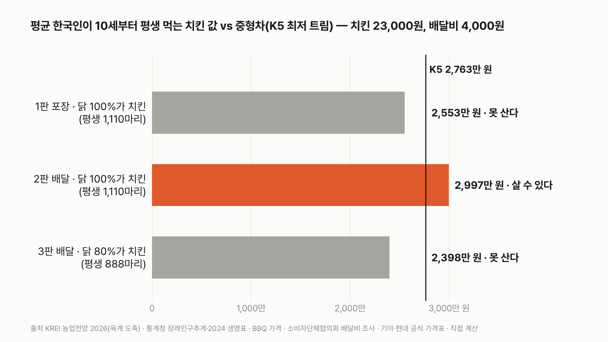

한국인이 평생 먹는 치킨 값이면, 중형차를 살 수 있을까
결과를 보기 전에 먼저 골라 주세요. 투표하면 독자 예상과 데이터 결과를 나란히 보여 드려요.
- 한국인이 평생 먹는 치킨을 돈으로 바꾸면 얼마일까요? 그 돈으로 중형차 한 대를 살 수 있을까요?
- 닭 도축 마릿수(한국농촌경제연구원), 인구와 기대수명(통계청), 치킨 값, 차값(제조사 공식 가격표)으로 계산했어요.
- 평균 한국인을 주인공으로 포장, 배달, 닭 중 치킨 비율까지 세 판을 겨뤘어요. 투표하면 결과가 바로 아래에 열려요.
조건과 규칙
- 치킨 한 마리는 23,000원이에요. 대형 브랜드의 한 마리 메뉴 값이고, 평생 이 값 그대로라고 봐요.
- 평균 한국인이 1년에 먹는 치킨은 국내에서 잡은 닭 수를 인구로 나눠 정해요. 10세부터 기대수명까지 먹어요.
- 배달이면 한 마리에 배달비 4,000원을 더해요.
- 중형차는 국산 중형 세단의 가장 싼 모델(2,763만 원)이에요. 평생 치킨 값이 차값보다 5% 넘게 많으면 '살 수 있다', 5% 넘게 적으면 '못 산다', 그 사이면 무승부예요.
독자 투표
한국인이 평생 먹는 치킨 값이면, 중형차를 살 수 있을까?
결과 요약
- 보통 한국인은 딱 중형차 한 대에 조금 못 미쳐요. 한 달 1.35마리면 딱 차값이 되고, 1.42마리를 넘게 먹는 사람은 살 수 있어요.
- 이건 국내에서 잡은 닭 전부를 치킨으로 친 최대치예요. 이렇게 넉넉히 세도 포장으로는 2,553만 원이라 210만 원이 모자라요. 배달은 닭 거의 전부가 치킨일 때만 겨우 닿아요. 최종 판정은 '못 산다', 2승 1패예요.
- 일주일에 한 마리씩 먹는 사람은 이야기가 달라요. 포장만으로 평생 8,847만 원, 중형차 3.2대 값이에요. 준대형차도 살 수 있어요.
그래서? 평생 치킨 값과 중형차 값은 거의 같은 크기예요. 갈림점은 한 달 1.35마리예요.
독자 예상 vs 데이터 결과
한국인이 평생 먹는 치킨 값이면, 중형차를 살 수 있을까?
데이터로 보면 못 산다. 닭 전부를 치킨으로 친 최대치로도 포장이면 210만 원 모자라요. 한 달 1.35마리면 딱 차값, 1.42마리를 넘으면 살 수 있어요.


| 판 | 평생 치킨 | 평생 치킨 값 | 중형차와 비교 | 판정 |
|---|---|---|---|---|
| 1판 포장 · 닭 전부가 치킨 | 1,110마리 | 2,553만 원 | 0.92배 | 못 산다 |
| 2판 배달 · 닭 전부가 치킨 | 1,110마리 | 2,997만 원 | 1.08배 | 겨우 산다 |
| 3판 배달 · 닭 80%가 치킨 | 888마리 | 2,398만 원 | 0.87배 | 못 산다 |
| 최종 | 못 산다 2승 1패 |
이 규칙과 가정이면 평균 한국인은 평생 치킨 값으로 중형차를 못 사요. 세 판 모두 평균 한국인 한 사람을 두고, 어떻게 먹느냐와 닭 중 얼마가 치킨이 되느냐만 바꿨어요.
1판 포장, 닭 전부가 치킨: 못 산다(0.92배)
2025년 국내에서 잡은 닭(고기용으로 키운 육계) 7억 7,565만 마리를 인구 5,168만 명으로 나누면 한 사람에 1년 15.0마리예요. 이 닭이 모두 치킨이 된다고 넉넉히 쳐도, 10세부터 74년 동안 1,110마리, 2,553만 원이에요. 중형차 값에 210만 원이 모자라요. 치킨으로 91마리, 6년 남짓 더 먹어야 하는 돈이에요.
2판 배달, 닭 전부가 치킨: 겨우 산다(1.08배)
같은 1,110마리를 모두 배달로 시키면 한 마리에 4,000원씩, 평생 배달비만 444만 원이 붙어요. 합치면 2,997만 원이라 중형차 값을 234만 원 넘어요. 배달비가 판정을 이렇게 흔들 줄은 몰랐어요. 다만 이 판은 국내 닭이 거의 전부 치킨이 될 때만 이겨요. 닭의 96.8%가 넘게 치킨이 되어야 '살 수 있다'에 들어요.
3판 배달, 닭 80%가 치킨: 못 산다(0.87배)
닭은 치킨만 되지 않아요. 닭볶음탕, 백숙, 학교 급식, 너깃·햄 같은 가공식품에도 쓰여요. 닭 중 몇 %가 치킨이 되는지는 공식 통계가 없어서, 다섯 마리 중 한 마리만 다른 데 쓰인다고 봤어요. 이것도 넉넉한 가정이에요. 이러면 배달로 먹어도 888마리, 2,398만 원이라 못 사요. 계산해 보면 치킨 비율이 87.6%보다 낮으면 배달로도 '못 산다'예요. 닭 여덟 마리 중 한 마리만 치킨이 아닌 곳으로 가도 판정이 바뀌는 거예요.

뒤집히는 조건: 한 달 1.35마리
평균 한국인의 판정이 아슬아슬한 건 갈림점이 가깝기 때문이에요. 평생 꾸준히 한 달에 포장으로 1.35마리, 배달로 1.15마리를 먹으면 중형차 값이 돼요. 평균 한국인은 최대치로 잡아도 한 달 1.25마리라 그 바로 아래에 있어요. 평생 한 달에 포장 1.42마리, 배달 1.21마리를 넘게 먹는 사람이면 살 수 있어요.
주 1회면 판정이 완전히 뒤집혀요
일주일에 한 마리를 혼자 다 먹는 사람이라면, 1년 52마리, 평생 3,846마리예요. 포장만으로 8,847만 원, 중형차 값의 3.2배예요. 준대형차(4,245만 원)도 2.1배라 두 대를 살 수 있어요. 배달로 시키면 1억 385만 원이에요. 둘이 한 마리를 나눠 먹어도 1.60배라 중형차는 넉넉히 사요. 평균 한국인은 닭 수를 인구로 나눈 값이라 이미 나눠 먹는 게 들어 있어요.
차마다 필요한 양으로 보면, 경차(1,555만 원)는 포장으로 한 달 0.76마리, 준대형차는 한 달 2.1마리(배달 1.77마리)면 돼요. 평균 한국인은 경차는 넉넉히 사고(1.64배), 준대형차는 못 사요(0.60배).

가정을 바꾸면
포장 판을 기준으로 보면, 20세부터 세면 0.80배, 동네 치킨처럼 한 마리 2만 원으로 잡아도 0.80배로 더 멀어져요. 반대로 5세부터 세면 0.99배, 치킨 값을 25,000원으로 잡으면 1.00배로 무승부가 돼요. 어느 쪽이든 포장으로 '살 수 있다'까지 가지는 않아요.
수입 닭까지 같은 비율로 치킨이 된다고 보면 포장으로도 1.16배라 살 수 있어요. 2025년 닭고기 소비는 국내 생산의 1.26배예요. 하지만 수입 닭은 대부분 냉동 부분육(다리·날개 같은 부위만 판 고기)이라, 한 마리 치킨을 파는 프랜차이즈에는 잘 쓰이지 않아요. 그래서 판정에는 넣지 않았어요.

치킨 값은 10년 새 43% 올랐어요
통계청 소비자물가지수의 '치킨' 품목은 2015년 90.2에서 2025년 128.9가 됐어요. 이 글은 치킨 값과 차값을 모두 지금 값으로 맞춰 계산했어요. 둘이 오르는 속도가 다르면 판정도 조금씩 움직여요.
결국 판정을 가르는 것
평균 한국인에게 평생 치킨 값과 중형차 값은 거의 같은 크기예요. 그래서 포장이냐 배달이냐, 닭 중 얼마가 치킨이 되느냐 같은 작은 차이가 판정을 바꿔요. 최대치로 세고 배달비까지 얹어야 겨우 닿는 거라, 보통의 한국인은 '못 산다' 쪽이에요. 한 달에 1.35마리, 주 1회라면 중형차는 물론 준대형차까지 닿아요.
이 숫자는 어디서 왔나요
출처
기준일 도축 마릿수는 2025년, 인구는 2025년 추계, 생명표는 2024년, 치킨 값과 차값은 2026년 11월 8일 확인한 값이에요. 처음 조건은 2026년 11월 8일 계산하기 전에 정했고, 같은 날 검토 뒤 판을 다시 짰어요(아래).
한국농촌경제연구원
- 육계 도축 마릿수, 닭고기 소비·생산 (농업전망 2026 5장)
2025년 육계 7억 7,565만 마리, 소비 776.8천 t·생산 616.3천 t
통계청
- 장래인구추계 주요 인구지표KOSIS DT_1BPA002
2025년 총인구 51,684,564명
- 2024 생명표KOSIS DT_1B42
10세 기대여명 73.97년
BBQ 황금올리브치킨 가격 인상 발표 보도(YTN, 2024-05-22)
- 치킨 한 마리 가격
23,000원
한국소비자단체협의회 물가감시센터
- 배달비 조사 (2022년 12월)
가장 흔한 배달비 3,000~5,000원
기아, 현대자동차
- 차값 (2026년 11월 기준 공식 가격표)
경차 기아 레이 트렌디 1,555만, 중형 기아 K5 2.0 스마트 셀렉션 2,763만, 쏘나타 2.0 프리미엄 2,876만, 준대형 현대 그랜저 2.5 프리미엄 4,245만 원
통계청
- 소비자물가지수 '치킨'KOSIS DT_1J22001원본 보기
2015~2025년 치킨 값 흐름
어떻게 셌나요
- 평균 한국인의 치킨 수: '한국인이 1년에 치킨을 몇 마리 먹나'는 공식 통계가 없어요. 그래서 2025년 국내에서 잡은 육계 7억 7,565만 마리를 총인구 5,168만 명으로 나눴어요. 한 사람에 1년 15.0마리, 한 달 1.25마리예요. 닭 수를 인구로 나눈 값이라 아이부터 어르신까지, 나눠 먹는 것까지 다 들어 있어요.
- 치킨 비율: 닭 가운데 몇 %가 치킨이 되는지도 공식 통계가 없어요. 1·2판은 100%(위쪽 끝), 3판은 80%로 뒀어요. 판정이 바뀌는 비율(96.8%, 87.6%)도 함께 계산했어요.
- 수입 닭은 판정에 넣지 않았어요. 넣으면 포장으로도 1.16배예요.
- 평생: 10세부터 먹기 시작한다고 봤어요. 2024 생명표에서 10세 아이는 앞으로 평균 73.97년을 더 살아요(기대여명).
- 치킨 값: 한 마리 메뉴인 BBQ 황금올리브치킨 23,000원(2024년 5월 인상 발표)을 썼어요. 부위만 담은 콤보 메뉴는 한 마리 기준이 아니라 쓰지 않았어요. 지금 값을 평생 그대로 썼고, 차값도 지금 값이에요.
- 배달비: 2022년 서울 조사에서 가장 흔한 배달비가 3,000~5,000원이었어요. 가운데인 4,000원을 썼어요.
- 차값: 제조사 공식 판매가(부가세 포함)에서 각 차의 가장 싼 사양(트림)을 골랐어요.
- 수입차는 뺐어요. BMW 5시리즈 공식 가격표가 열리지 않았고, 벤츠 E클래스 값도 공식 자료로 확인하지 못했어요.
- 주 1회형은 판정 밖에서, 일주일에 한 마리를 혼자 다 먹는 사람으로 정했어요.
한계 5가지
이 데이터로 말할 수 없는 것
- 한국인이 치킨을 얼마나 자주 먹는지, 닭 중 몇 %가 치킨이 되는지는 공식 통계가 없어요. 평균 한국인은 국내 육계 도축 마릿수로 잡은 위쪽 끝이고, 80%는 가정이에요.
- 치킨 값 23,000원은 대형 브랜드 한 마리 메뉴 값이에요. 동네 치킨집이나 순살 메뉴는 값이 달라요. 같은 브랜드도 매장과 배달앱 값이 다를 수 있어요.
- 배달비는 2022년 서울 조사라 지금, 그리고 다른 지역과 다를 수 있어요.
- 차는 가장 싼 사양의 값이에요. 취득세, 보험, 기름값은 넣지 않았어요.
- 평생 같은 빈도로 먹는다고 봤어요. 어릴 때와 나이 들어서는 먹는 양이 다를 수 있어요.
새 글 나오면 받아 보기
피드 리더 앱에 이 사이트 주소를 한 번 넣어 두면, 새 글이 올라올 때 앱에 떠요. 가입이나 메일 주소는 필요 없어요.
받는 법 보기
- 피드 리더 앱을 하나 골라요. 새 글을 모아 보여 주는 앱이에요. 예를 들면 Feedly나 Inoreader가 있어요. 둘 다 무료고 웹·휴대폰에서 써요.
- 앱에서 '구독 추가'(+)를 누르고 아래 주소를 붙여 넣어요.
- 끝이에요. 새 글이 올라오면 앱 목록에 떠요.
https://protofu.github.io/opendata-insight/feed.xmlFeedly를 쓴다면 여기를 눌러 바로 추가할 수도 있어요.